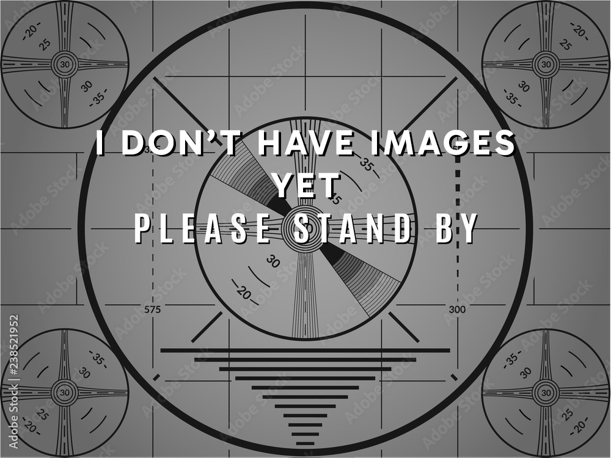
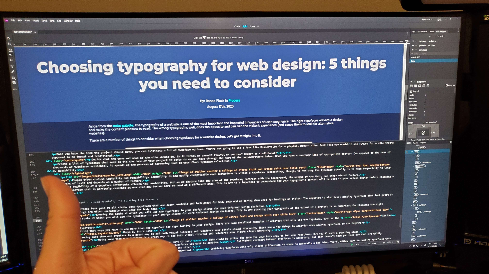

Aside from the color palette, the typography of a website is one of the most important and impactful influencers of user experience. The right typefaces elevate a design and make the content pleasant to read. The wrong typography, well, does the opposite and can ruin the visitor’s experience (and cause them to look for alternative websites).
There are a number of things to consider when choosing typefaces for a website design. Let’s get straight into it.
Before you start diving into which fonts you want to use for a website, it’s important to plan out your typography. You need to have a solid understanding of how the typefaces you choose will be used.
How many heading levels will there be? What about meta text for things like bylines on articles or things like photo captions? Will there be different body text sizes for different sections of the site? Are there any instances of big typography, such as over hero images?
Make a list of what you need so that when you start exploring typefaces you can look at how they’ll appear at different sizes and in different styles based on your actual project, and not some theoretical idea of what’s necessary.
One of the most important determinations when planning the typography for any website is to decide what the tone and mood of the site should be. Is it formal or casual? Playful or serious? Modern or traditional?
Once you know the tone the project should have, you can eliminate a lot of typeface options. You’re not going to use a font like Baskerville for a playful, modern site. Just like you wouldn’t use Futura for a site that’s supposed to be formal and traditional.
Decide what the tone and mood of the site should be. Is it formal or casual? Playful or serious? Modern or traditional?
Create a list of typefaces that seem to fit the tone of your project to refer to as you move through the rest of the considerations below. When you have a narrower list of appropriate choices (as opposed to the tens of thousands of typefaces available), it speeds up the process of narrowing down to your final typeface selections.
People often confuse legibility and readability. Legibility is how easily recognizable each letterform is within a typeface. Readability, though, is how easy the typeface actually is to read (especially in large blocks of text) and depends on a number of factors.
The legibility of a typeface definitely affects its readability. But so do factors like the size of the typeface, contrast with the background, the weight of the font, and other visual factors.
A typeface that is perfectly readable at one size may become hard to read at a different size. This is why it’s important to understand how your typographic content will be used in your actual design before choosing a typeface.
Not all typefaces look good at all sizes. Some typefaces that are super readable and look great for body copy end up boring when used for headings or titles. The opposite is also true: display typefaces that look great as titles or headings are often unreadable when used for body text.
Knowing the scale at which you will use the typefaces in your design allows for more informed design decisions.
Knowing the scale at which you will use the typefaces in your design allows for more informed design decisions. This is why planning your typography at the outset of a project is so important for choosing the right typefaces.
There’s nothing that says you have to use more than one typeface (or type family) in your design. There are some excellent examples of websites that only use one typeface, such as the Stripe site or Akaya B. Ito's site.
That said, using more than one typeface is a great way to add both visual interest and reinforce your site’s visual hierarchy. There are a few things to consider when picking typefaces to use together:
Using more than one typeface is a great way to add both visual interest and reinforce your site’s visual hierarchy.
Combining fonts is part art and part science. Once you know the basic criteria that help create a solid combination, it takes a fair amount of trial-and-error to find the perfect options.
Licensing is one of the most overlooked parts of choosing web typography. If you’re using a web font service like Google Fonts or Typekit, this generally isn’t a concern, as the typefaces they offer are licensed for web use.
But if you’re using fonts from other sources, you’ll need to be sure that they’re licensed for the type of project you’ll be using them on. Not all fonts are licensed for broad use. Some are inexpensive or free for personal use, but commercial use requires costly licensing fees.
The other thing to consider is if the website you’re designing is part of a larger brand, where the typefaces used there will need to be used in other marketing materials. Make sure the licensing allows for those other uses.
Choosing the right typography for your website projects takes experimentation and trying different options until you find the one that fits. Typography can have a profound impact on the way visitors perceive a website. The right typography creates an enjoyable experience, while type that is hard to read or doesn’t match the tone of the site can negatively impact UX. It’s worth spending the time and resources to find the right fit.